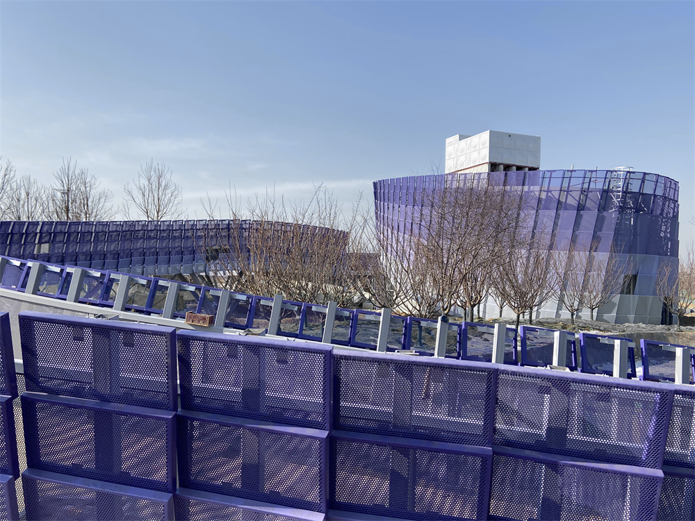
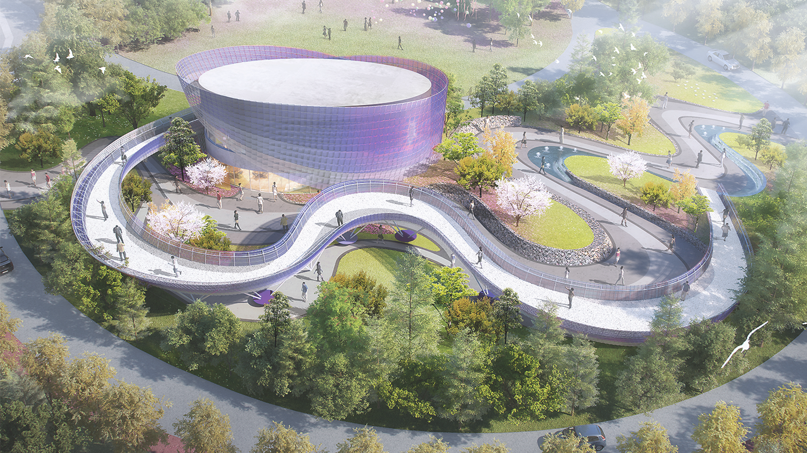
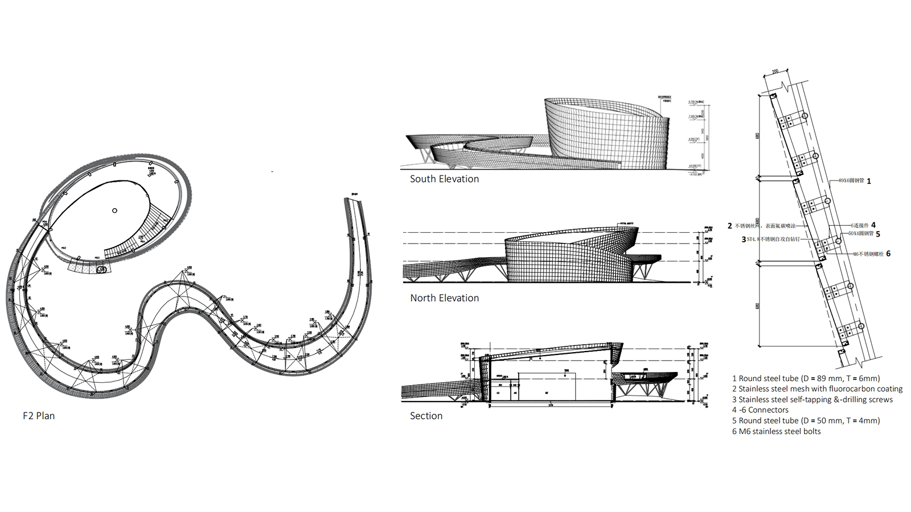
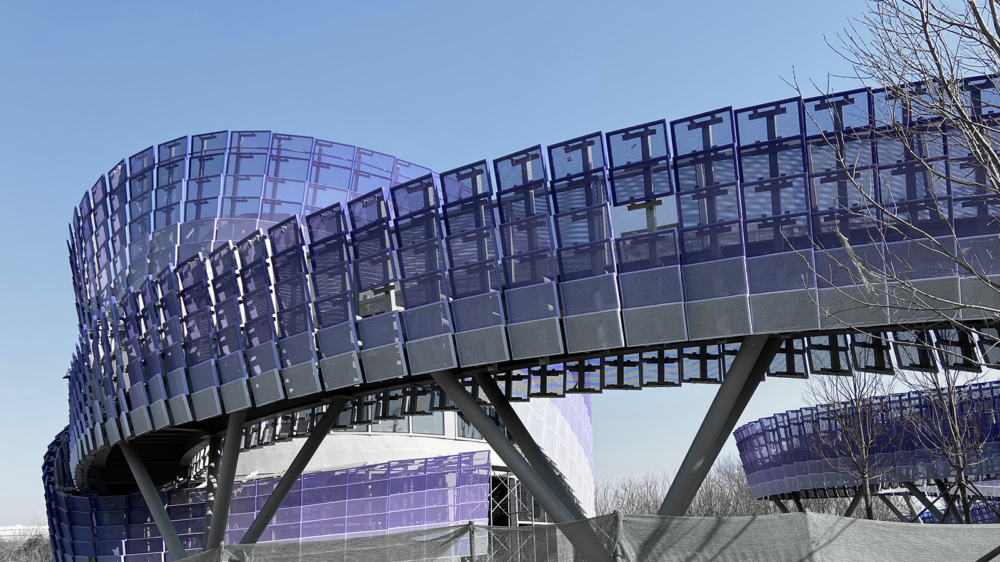
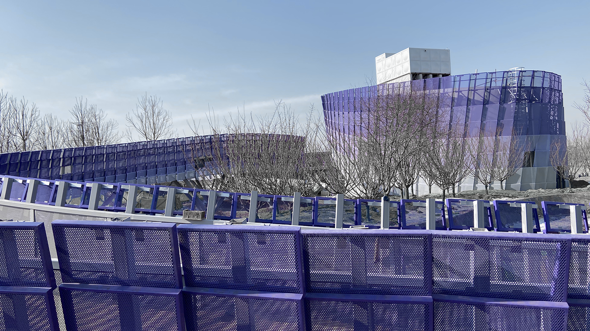
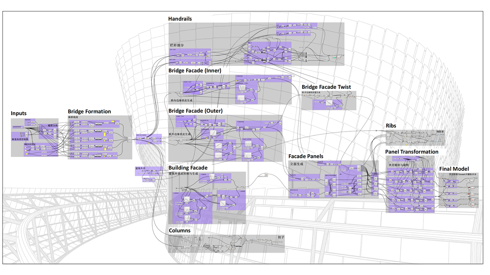
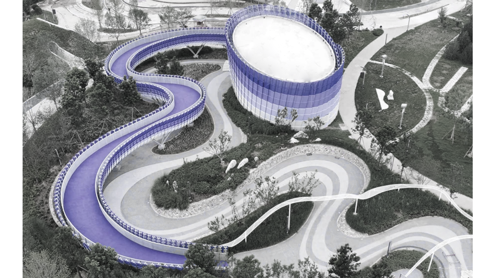

Design
Silk Tapestry Pavilion
The Silk Tapestry Pavilion, part of the Dingzhou Expo Park project in Hebei, China, was designed as a ribbon-like structure fluttering in the breeze. We developed the parametric workflow, where the overall form, facade panelization, and steel substructure were all driven and coordinated through a set of key control parameters.





